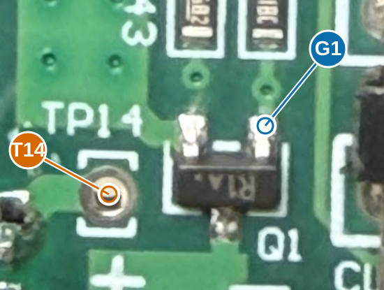

Disconnect battery and programmer. Select RESISTANCE (ohms), not diode or continuity mode. Leave all components fitted.
B84 red T14 / black G1; B85 red G1 / black T14. Hold each pair for about 10 seconds and report the settled value, or initial and final values if changing. T14 is TP14; G1 is Q1 upper-right metal contact directly below R44.
Q1 gate-path conflict: let both resistance readings settle

T14: TP14 plated test hole, established on U5 pin 8 / OUTA. Not the battery terminal.
G1: Q1 upper-right metal contact directly below R44; native Q1 pin 1 / model Q1.R, presumed gate. Do not probe R44 instead.
ID
Red probe
Black probe
Condition
Reading
B84
T14
G1
Unpowered; all components fitted
B85
G1
T14
Unpowered; all components fitted
The in-circuit 15-kohm reading supports the 18C/15-kohm interpretation for R44. Stability and probe baseline were not reported. This does not prove isolated value, tolerance or Q1 pin roles. It leaves B61 TP14-to-Q1.R = 516 ohm unexplained by the settled insulated-gate model. Preserve both reports; do not merge nets or declare a failed device.
Copy results
Worksheet only; nothing is sent automatically. Copy before closing.
What follows
Resolve hidden paths and device behavior - RF feed/output wiring, switch contacts and front-bank ANT2 routing are supported. Candidate device roles remain unresolved. TP11/TP17 routes are complete as drawn, with hidden-layer uncertainty retained as a reconstruction limitation. Scope work and component isolation are deferred by owner.
Recover critical component values - 44 ceramic values; prioritize tuning and receiver after topology.
Finish interface and package mapping - LED colour branches and J5 board-contact/output mapping are established. LED footprint, connector fit and external motor harness orientation remain reproduction qualifications.
ERC: 1 retained U6/U6A output conflict. U6A is DNP; its regulator symbol remains by your request. Other source and library findings are resolved.